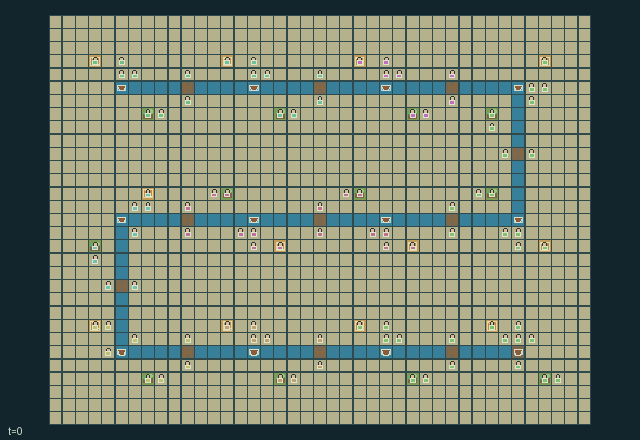

GI226 · 潮汐运河联邦

九十六个独立角色发展运河地区，种植、过河、修堤并实运货物；地区利益与下游水量、防洪和航运共同变化。
身份与原始接口
共有 96 个独立可操作角色；每人 19 个离散动作；每人的原生观察宽度 184；原始时限 768 步。声明的单步奖励范围为 -1.0 至 4.0。观察制度标识：partially_observable。
源码校验值： 710243d27cc5a344f2720b331feceda722808668d2b2e17c3d542352d711b2e3
目标、奖励、人口、地图和时限均保留原值。动图不表示已完成任务。
目标与玩法
九十六个独立角色发展运河地区，种植、过河、修堤并实运货物；地区利益与下游水量、防洪和航运共同变化。
围绕上述目标安排每位角色的合法动作，以实际资源、位置、工序和信息为约束。提交的是同一步的联合行动，不是把角色按界面顺序逐个推进。动作编号与按钮名保持游戏中的英文，见下方逐项操作表。
自然完成、失败和截断由原始内核决定；最长运行 768 步，不能把到达时限当作成功。先看结束标记，再检查目标、损失和实际回报。空间游戏保留原始吸收终止；抽象游戏保留历史终止行为。
这款游戏体现的理念
信息、探测与通信: 谁知道事实、何时测得、是否传到对方是不同状态。检验记忆或通信作用时，各对照必须遵守相同角色信息权限。
资源公地与外部性: 动作会改变其他角色也要面对的持久资源或负担。比较抽取与维护时，应记录下游资源轨迹，不能只看当前得分。
承诺、交换与治理: 承诺会占用时间、资金、通行或材料。区分口头约定、已生效承诺与最终交付，也记录取消和到期。
互补生产与服务: 有效产出依赖有序工序、稀缺设备或另一角色能力。应统计真正完成的产品和资源回流，不能把中间动作数当作成功。
联合运输与共享通行: 位置、载物几何、占位与持久通行条件约束下一步谁能成功。区分实体交接、共用控制和同步合力，不能用合作标签替代机制。
这些是规则结构支持的研究问题，不是已观察到的学习效果。
实际游玩操作指南
crucibles play --game gi226保持终端运行并打开打印的网址，选择本款、设种子，点击 Create session 建局。游戏本体始终为英文。
用 Assign / take over 把角色编号或范围交给主持人，或用 Assign all roles 接管全员。用 Create player invitation 邀请另一参与者，再分配不重叠角色；全部原角色均可操作。
为每个接管角色选合法指令，点击 Queue 排队。方向键或字母方向键在本款存在对应动作时，为当前角色视角排队；空格或 Advance one joint step 同时推进全员。无方向动作时使用下拉框。
未排队角色由标注的未经训练、合法动作均匀采样策略操作。下一步前可接管或释放，不重置世界。完整状态调试视角暴露特权信息并永久记录；角色视角保留权限。关闭会话可保留日志，服务重启不恢复会话。
全部动作操作表
编号和英文按钮逐项对应清单。中文提示说明操作类别；具体目标、阈值、阶段和顺序按本款规则与清单执行。合法不保证有产出，前提不足可能没有效果。
0·Wait / accept neighboring handoff— 等待、恢复或补充；是否产生被动变化取决于本款规则。
1·Move north— 按按钮方向移动或施力；距离、占位、载物和阶段仍须满足本款限制。
2·Move east— 按按钮方向移动或施力；距离、占位、载物和阶段仍须满足本款限制。
3·Move south— 按按钮方向移动或施力；距离、占位、载物和阶段仍须满足本款限制。
4·Move west— 按按钮方向移动或施力；距离、占位、载物和阶段仍须满足本款限制。
5·Withdraw one timber at nearest store— 等待、恢复或补充；是否产生被动变化取决于本款规则。
6·Deposit carried timber or grain— 提交所列交易、权利或承诺操作；注意对方同意、余额、有效期与既有承诺。
7·Swap tools with accepting neighbor— 接收、确认或处理已经到达的对象；先确认目标、容量和当前阶段。
8·Give cargo to empty accepting neighbor— 接收、确认或处理已经到达的对象；先确认目标、容量和当前阶段。
9·Open sluice with wrench— 改变所列开关、锁存或配置；持续多久以及何时影响伙伴，以当前规则为准。
10·Close sluice with wrench— 改变所列开关、锁存或配置；持续多久以及何时影响伙伴，以当前规则为准。
11·Repair footbridge with timber and wrench— 处理清理、维修或支撑；检查耗材、距离及对公共设施的影响。
12·Irrigate field with watering can— 改变所列开关、锁存或配置；持续多久以及何时影响伙伴，以当前规则为准。
13·Harvest ripe field into empty hands— 进行所列采收、交付或兑现；地点、对象和加工状态必须匹配，不能假定按钮必然成功。
14·Tow barge downstream— 操作实体物料、能量、连接或运输；核对库存、携带容量、目标和伙伴动作。
15·Tow barge upstream— 操作实体物料、能量、连接或运输；核对库存、携带容量、目标和伙伴动作。
16·Load cargo onto empty barge— 操作实体物料、能量、连接或运输；核对库存、携带容量、目标和伙伴动作。
17·Post upstream water reading downstream— 进行所列种植或照料；资源和生长阶段限制仍然有效，收益可能延迟。
18·Raise town levee with three timber— 操作实体物料、能量、连接或运输；核对库存、携带容量、目标和伙伴动作。
角色与能力标识
以下保留英文游戏能力标识，便于在界面找到角色，并非可任意互换的皮肤。协调交接前先查看对应角色的合法动作。
agent_000·district_00_keeper_0
agent_001·district_00_builder_0
agent_002·district_00_hauler_0
agent_003·district_00_grower_0
agent_004·district_00_keeper_1
agent_005·district_00_builder_1
agent_006·district_00_hauler_1
agent_007·district_00_grower_1
agent_008·district_01_keeper_0
agent_009·district_01_builder_0
agent_010·district_01_hauler_0
agent_011·district_01_grower_0
agent_012·district_01_keeper_1
agent_013·district_01_builder_1
agent_014·district_01_hauler_1
agent_015·district_01_grower_1
agent_016·district_02_keeper_0
agent_017·district_02_builder_0
agent_018·district_02_hauler_0
agent_019·district_02_grower_0
agent_020·district_02_keeper_1
agent_021·district_02_builder_1
agent_022·district_02_hauler_1
agent_023·district_02_grower_1
agent_024·district_03_keeper_0
agent_025·district_03_builder_0
agent_026·district_03_hauler_0
agent_027·district_03_grower_0
agent_028·district_03_keeper_1
agent_029·district_03_builder_1
agent_030·district_03_hauler_1
agent_031·district_03_grower_1
agent_032·district_04_keeper_0
agent_033·district_04_builder_0
agent_034·district_04_hauler_0
agent_035·district_04_grower_0
agent_036·district_04_keeper_1
agent_037·district_04_builder_1
agent_038·district_04_hauler_1
agent_039·district_04_grower_1
agent_040·district_05_keeper_0
agent_041·district_05_builder_0
agent_042·district_05_hauler_0
agent_043·district_05_grower_0
agent_044·district_05_keeper_1
agent_045·district_05_builder_1
agent_046·district_05_hauler_1
agent_047·district_05_grower_1
agent_048·district_06_keeper_0
agent_049·district_06_builder_0
agent_050·district_06_hauler_0
agent_051·district_06_grower_0
agent_052·district_06_keeper_1
agent_053·district_06_builder_1
agent_054·district_06_hauler_1
agent_055·district_06_grower_1
agent_056·district_07_keeper_0
agent_057·district_07_builder_0
agent_058·district_07_hauler_0
agent_059·district_07_grower_0
agent_060·district_07_keeper_1
agent_061·district_07_builder_1
agent_062·district_07_hauler_1
agent_063·district_07_grower_1
agent_064·district_08_keeper_0
agent_065·district_08_builder_0
agent_066·district_08_hauler_0
agent_067·district_08_grower_0
agent_068·district_08_keeper_1
agent_069·district_08_builder_1
agent_070·district_08_hauler_1
agent_071·district_08_grower_1
agent_072·district_09_keeper_0
agent_073·district_09_builder_0
agent_074·district_09_hauler_0
agent_075·district_09_grower_0
agent_076·district_09_keeper_1
agent_077·district_09_builder_1
agent_078·district_09_hauler_1
agent_079·district_09_grower_1
agent_080·district_10_keeper_0
agent_081·district_10_builder_0
agent_082·district_10_hauler_0
agent_083·district_10_grower_0
agent_084·district_10_keeper_1
agent_085·district_10_builder_1
agent_086·district_10_hauler_1
agent_087·district_10_grower_1
agent_088·district_11_keeper_0
agent_089·district_11_builder_0
agent_090·district_11_hauler_0
agent_091·district_11_grower_0
agent_092·district_11_keeper_1
agent_093·district_11_builder_1
agent_094·district_11_hauler_1
agent_095·district_11_grower_1
信息与观察权限
每个行动者仅接收自己的原生观察行；公共状态、私人字段和延迟消息须分别处理，不能从全图推断角色已经知道。
动图是完整状态调试视角，可能揭示隐藏实体或私人状态。策略输入使用 obs[agent]，不能直接使用图片、完整状态树或伙伴私人观察。字段切片和可见性见原始清单。
强化学习接入
import jax
from crucibles_jaxmarl import make
env = make("gi226")
key = jax.random.PRNGKey(0)
key, rk, ak, sk = jax.random.split(key, 4)
obs, state = jax.jit(env.reset)(rk)
actions = env.sample_actions(ak, state)
obs, state, rewards, dones, info = jax.jit(env.step_env)(sk, state, actions)
done = dones["__all__"]观察为宽度 184 的浮点向量；动作是单个整型编号；每个合法掩码有 19 项。每次转移提供全部 96 人动作。掩码采样只是工程参照，不是训练后的学习器。
step_env 保留终止数据，不自动重置；step 提供外层自动重置，在信息字典保留原始终止状态与观察。用 dones["__all__"] 划分回合，分析时区分完成、失败和时限。
对同身份同形状编译或批处理，重置、策略和转移使用独立密钥。不同形状明确分组，不能缩小人口或时限。主机渲染留在训练图外。
训练问题与公平评测
拟合前按本款目标定义有效完成指标。保留原奖励，另报真实交付或服务、损失、资源状态、未决局和逐角色回报。动画不是奖励信号。
谁知道事实、何时测得、是否传到对方是不同状态。检验记忆或通信作用时，各对照必须遵守相同角色信息权限。
动作会改变其他角色也要面对的持久资源或负担。比较抽取与维护时，应记录下游资源轨迹，不能只看当前得分。
承诺会占用时间、资金、通行或材料。区分口头约定、已生效承诺与最终交付，也记录取消和到期。
有效产出依赖有序工序、稀缺设备或另一角色能力。应统计真正完成的产品和资源回流，不能把中间动作数当作成功。
位置、载物几何、占位与持久通行条件约束下一步谁能成功。区分实体交接、共用控制和同步合力，不能用合作标签替代机制。
比较记忆、通信或集中价值网络时须匹配策略信息，声明价值网络权限并保持角色输入过滤。伙伴或对手分布、掩码、算力和检查点选择规则须匹配，最终测试不能参与拟合或选择。
独立训练运行或来源配对块才是推断单位，同一策略的多局不是独立训练复现。保存哈希、种子、版本、设备、耗时和成本。负向、零、失败和无法判定都有效，不提供训练检查点或承诺分数。
分类与判断依据
可重叠编辑标签是阅读辅助，不证明新颖性、难度、策略等价性或学习效果。
- 信息、探测与通信
- 依据字段：
manifest.task.objective。该字段规则支持此阅读标签，可在下方原始资料逐字核对。
- 资源公地与外部性
- 依据字段：
manifest.task.objective。该字段规则支持此阅读标签，可在下方原始资料逐字核对。
- 依据字段：
manifest.task.interaction。该字段规则支持此阅读标签，可在下方原始资料逐字核对。
- 依据字段：
manifest.task.observation_access。该字段规则支持此阅读标签，可在下方原始资料逐字核对。
- 承诺、交换与治理
- 依据字段：
scene.rules.10。该字段规则支持此阅读标签，可在下方原始资料逐字核对。
- 互补生产与服务
- 依据字段：
manifest.task.observation_access。该字段规则支持此阅读标签，可在下方原始资料逐字核对。
- 依据字段：
manifest.actions.11。该字段规则支持此阅读标签，可在下方原始资料逐字核对。
- 依据字段：
scene.rules.5。该字段规则支持此阅读标签，可在下方原始资料逐字核对。
- 联合运输与共享通行
- 依据字段：
manifest.task.objective。该字段规则支持此阅读标签，可在下方原始资料逐字核对。
- 依据字段：
manifest.task.interaction。该字段规则支持此阅读标签，可在下方原始资料逐字核对。
- 依据字段：
manifest.actions.6。该字段规则支持此阅读标签，可在下方原始资料逐字核对。
来源、回执与预览边界
纯英文无说明面板的动图把保存的未训练合法动作交给原内核重放，最多抽取二十五个真实端点，含初始与终止，无虚构插值。它是完整状态调试，不是角色观察。
工程通过不证明学习。非零浮点差异保留并记为未定，不增加容差。人类成绩尚未核验。
完整原始保存回放
整包保留大型运河与森林十一条轨迹及厨房六条轨迹，包括失败、零效应和数值不确定性。旧说明面板作为档案内容保留。